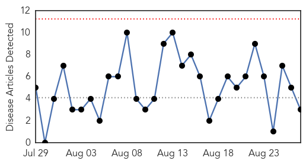

West Nile Virus
30-Day Web Trend
0 alerts, 0 warnings

30-Day Twitter Trend
0 alerts, 0 warnings

Article Locations

Article Confidences

Top Articles:
Top Tweets:
-
No tweets found for Aug 27, 2014
Pertussis
30-Day Web Trend
1 alerts, 0 warnings

30-Day Twitter Trend
0 alerts, 0 warnings

Article Locations

Article Confidences
Top Articles:
- 0.891
- Swedish health agency warns of whooping cough spreading - Xinhua
- 0.859
- Vermont Department of Health: Start of school year a good time for updating vaccinations
- 0.764
- Americans Clearly Don't Understand How Deadly HPV Is
- 0.718
- Immunization Month is a reminder that diseases can still be a threat
- 0.647
- Adults skipping many necessary vaccines
Top Tweets:
-
No tweets found for Aug 27, 2014